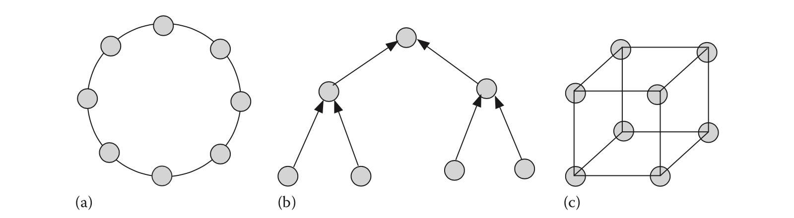

第一章 概述
1.1 什么是分布式系统？
二十一世纪的生活越来越依赖于改变社会结构的网络服务。从网络搜索，视频会议，股票交易和网上银行开始，通过各种社交网络与朋友和同行保持联系，基于网络的服务起着主导作用。虽然网络提供基本连接，但构建在这些网络之上的各种服务是分布式系统的实例。
莱斯利·兰波特（Leslie Lamport）曾经指出，“一个分布式系统是一个你甚至不知道的计算机故障都会使你自己的计算机无法使用的系统。”虽然不是一个定义，但它描述了提出一个问题的挑战。适当的分布式系统定义。在分布式系统中分发什么？如果计算机系统的处理器距其主存距离100码，那么它是一个分布式系统吗？如果输入输出设备距处理器3英里远怎么办？如果考虑物理分布，则分布式系统的定义会依赖于硬件组件的物理分布程度，这当然是不可接受的。为了缓解这个问题，通常使用处理能力的逻辑或功能分布来表征分布式系统。
分布式系统通常满足以下标准：
多进程：该系统由多个顺序进程组成。 这些进程可以是系统进程，也可以是用户进程，但每个过程都应该有一个独立的控制线程 —— 显式或隐式。
进程间通信：进程使用有限时间从一个进程传输到另一个进程的消息彼此通信。 延迟的实际性质或顺序将取决于消息链路的物理特性。 这些消息链接也称为通道。
不相交地址空间：进程具有不相交的地址空间。 因此，我们不会将共享内存多处理器认为分布式计算系统的真实表示。请注意，程序员通常使用共享内存原语表示进程间通信，但共享内存的抽象可以使用消息来实现。共享内存和消息传递之间的关系将在第3章中讨论。
集体目标：进程必须相互交互以实现共同目标。 考虑进程网络中的两个进程P和Q。如果P计算给定的x值集合的f(x)= x^2，并且Q将一组数字乘以π，那么我们就不愿意调用(P，Q)分布式系统，因为之间没有相互作用 P和Q.然而，如果P和Q彼此协作以计算半径为x的一组圆的区域，则(P，Q)共同表示有意义的分布式系统。同样，如果一组卖家宣传其产品的成本，并且一组买家发布他们有兴趣购买的商品清单以及他们愿意支付的价格，那么单独地，买方都不会 卖方也不是有意义的分布式系统，但当它们通过互联网连接到拍卖系统时，它就变成了一个有意义的分布式系统。
上述定义是最小的定义。它没有考虑到进程间协作或安全问题的系统范围执行控制，这在运行时管理和用户计算支持方面肯定是重要的问题。该定义强调了逻辑分布的计算的最简单的可能特征。物理分布通常是逻辑分布的先决条件。
1.2 为什么需要分布式
在过去几年中，分布式系统已经变得非常重要。其重要性日益增加的原因是多方面的：
地理位置分散的环境：首先，在许多情况下，计算环境本身在地理上是分布式的。例如，考虑一个银行网络。每家银行都应该维护其客户的账户。此外，银行相互沟通，监控银行间交易或记录地理分散的自动柜员机（ATM）的资金转移。地理上分布的计算环境的另一个常见例子是互联网，它深深地影响了我们的生活方式。用户的移动性为地理分布增加了新的维度。
加速：其次，需要加快计算速度。传统单处理器的计算速度快速接近物理极限。虽然多核，超标量和超大指令字（VLIW）处理器通过在架构级别引入并行性来扩展极限，但这些技术的扩展性不能超过某个级别。获得更多计算能力的另一种技术是使用多个处理器。将总问题划分为较小的子问题并将这些子问题分配给可以同时操作的独立物理处理器可能是提高计算速度的有吸引力的方法。此外，这种方法提高了可扩展性，用户或管理员可以通过购买额外的处理单元或资源来逐步增加计算能力。社交网站广泛使用该概念来同时上载和下载数百万客户的照片和视频。
资源共享：第三，需要资源共享。这里，术语资源代表硬件和软件资源。计算机A的用户可能想要使用与计算机B连接的花式激光打印机，或者计算机B的用户可能需要计算机C可用的一些额外的磁盘空间来存储大文件。在工作站网络中，工作站A可能想要使用工作站B和C的空闲计算能力来增强特定计算的速度。通过Google Docs，Google可让您在计算机上无需任何其他任何内容即可共享用于文字处理，电子表格应用程序和演示文稿创建的软件。云计算基本上将用户或组织的计算基础设施外包给数据中心 —— 这些中心允许数千个客户通过因特网共享其计算资源，以便以可承受的成本进行高效计算。
容错：第四，围绕单个中心节点构建的强大的单处理器或计算系统在处理器发生故障时容易完全崩溃。许多用户认为这是有风险的。分布式系统有可能通过使用适当的容错技术来解决这个问题 —— 当一小部分处理器发生故障时，剩余的进程将接管故障处理器的任务并保持应用程序运行。例如，在具有三重模块冗余（TMR）的系统中，使用三个相同的功能单元来执行相同的计算，并且通过多数投票确定正确的结果。在许多容错分布式系统中，处理器会定期以预定义的间隔相互检查，从而实现自动故障检测，诊断和最终恢复。当故障削弱了处理元件的一小部分或分布式系统的通信链路时，一些非关键应用的用户愿意妥协于系统性能的部分降级。这是优雅退化的本质。因此，分布式系统为结合容错和优雅降级提供了极好的机会。
1.3 分布式系统实例
有许多分布式系统的例子在日常生活中用于各种应用。这些服务中的一小部分是数据密集型的，并且计算组件非常小。示例是面向数据库的应用程序（考虑Google搜索和收集来自世界各地的计算机的信息）。其他人则是计算密集型的。大多数系统都是结构化为客户端 - 服务器系统，其中服务器机器是数据或资源的保管者，并为许多地理位置分散的客户端提供服务。但是，一些应用程序不依赖于中央服务器 - 这些是对等（P2P）系统。以下是分布式系统的一些示例：
万维网：万维网（WWW）是一种在互联网上运行的流行服务。它允许一台计算机中的文档引用存储在其他计算机中的文本或非文本信息。例如，美国的文件可能包含对非洲雨林照片或澳大利亚音乐录音的参考。这些引用在用户的监视器上突出显示，并且当用户选择时，系统使用适当的协议从远程服务器获取项目并显示图片或在客户端机器上播放音乐。
互联网和WWW改变了我们开展日常活动或开展业务的方式。 例如，现在通过互联网完成了很大一部分航空公司和酒店预订。 在过去几年中，通过互联网购物的情况急剧增加。 现在有数百万人通过互联网定期交易股票。 音乐爱好者下载并交换CD音质，将老式的CD和DVD购买推向近乎陈旧的状态。 数字图书馆使用户可以在舒适的家中即时访问档案信息。
社交网络：互联网媒介的社交互动近来出现了戏剧性的增长。 现在，数以百万计的用户使用他们的台式机或笔记本电脑或智能手机与他们的伙伴使用这些网络站点发布和交换消息，照片和视频剪辑。 社交网络的成员可以通过阅读其他成员的个人资料页面并与他们联系来进行社交。 成员之间的互动往往导致形成共享共同利益的虚拟社区或俱乐部。 成员的输入由一个或多个地理位置的数千台服务器处理，这些服务器代表成员执行特定任务 - 一些处理照片，一些处理视频，一些处理成员资格变化等。随着成员资格的增长 ，更多的服务器被添加到池中，强大的服务器取代了较慢的服务器。
银行间网络：周日早上艾米需要300美元，所以她走到附近的ATM取款。 艾米在爱荷华市有一个支票账户，但她有两个储蓄账户 - 一个在芝加哥，另一个在丹佛。 每家银行在每日现金提取上设定了100美元的上限，因此艾米使用三张不同的银行卡来提取所需的现金。 这些借记会立即在她在三个不同城市的银行账户中登记，并重新计算她的新余额。 ATM在各自的金融机构注册，银行间网络执行整个操作。
P2P网络：P2P系统在文件共享，内容分发和互联网电话方面非常流行。从历史上看，Napster是使用P2P技术分享其客户个人音乐收藏的先驱。这些歌曲不是将歌曲存储在中央计算机上，而是存储在用户的机器上。它们有数百万散落在世界各地。当你想使用Napster下载一首歌时，你是从另一个人的机器上下载的，那个人可能是你的隔壁邻居或世界各地的人。这导致了P2P数据共享的发展。 Napster不是真正的P2P系统，因为它使用了集中式目录。但是许多提供类似服务的后续系统（例如，Gnutella，KaZaA）避免使用中央服务器或中央目录。 P2P系统现在在交换音乐文件之外的领域中找到应用。例如，加州大学伯克利分校的OceanStore项目在底层P2P网络Tapestry之上构建了一个在线数据存档机制。数百万人使用围绕P2P技术构建的Skype进行互联网电话和视频聊天。
实时分布式系统：实时分布式系统处理地理分布式环境中事件的时间关键协调。工业工厂广泛使用控制器网络来监督生产和维护。考虑一个化学工厂，其中控制器将某个腔室的压力保持在200psi。随着蒸汽压力增加，温度有增加的趋势 —— 因此在300英尺远处有另一个控制冷却剂流动的控制器。该冷却液确保腔室温度不超过180°F。此外，设备的安全性要求压力和温度的乘积不超过35,000。这里，分布式计算系统维持由独立控制器监视和控制的系统参数的不变性关系。在城市交通控制网络中，不同控制点的计算机控制交通信号，以最大限度地减少交通拥堵并最大化交通流量。车载网络允许自发的车辆间无线通信，这不仅使车辆能够与其他车辆共享有关道路状况的信息，而且还提供了改善机动性和集体安全性的可能性。
传感器网络：硬件成本的下降和无线技术的发展为特定应用或专用分布式系统的设计带来了新的机遇。 一个这样的应用是传感器网络[ASSC02]。 每个节点都是一个微型处理器，配备一些传感器，可以感知各种环境参数，并能够与其他节点进行无线通信。 这种网络可能潜在地用于各种各样的问题：从战场监视，生物和化学攻击检测到医疗保健，家庭自动化，生态和栖息地监测。 这是无处不在的计算的更大愿景的一部分。
网格和云计算：网格计算是一种分布式计算形式，支持计算机网络上的并行编程。 在低端，计算网格可以使用一个或两个组织的一小部分计算资源，而在高端，它可以将全世界数百万台计算机组合起来处理极大的计算项目。 目标是比传统方法更快速和更便宜地解决困难的计算问题。 我们在这里提供两个例子。
第一个例子是大型强子对撞机（LHC），一个粒子加速器和一个由欧洲核子研究组织（CERN）建造的复杂实验试验台，从2008年开始运作，它被用来回答基本的科学问题。 科学实验每年产生大约15 PB的数据（1 PB = 1015字节，这相当于超过2000万张CD）。 这些数据分布在全球各地，分布在加拿大，法国，德国，意大利，荷兰，北欧国家，西班牙，台北，英国和美国的两个地点的11个大型计算机中心，形成一个全球性的虚拟组织。 这些第1层中心可将数据提供给150多个第2层中心，用于特定的分析任务。 各个国家的个别科学家可以使用本地计算机集群和PC在本地访问LHC数据。
第二个例子是SETI @ home项目。外星人存在吗？ SETI（寻找外星智能的一种手段）是一个大型项目，旨在发现这个宇宙中存在的外星生命。需要对从数百个射电望远镜不断收集的大量数据进行分析，以得出关于外星生命可能存在的任何结论。这需要巨大的计算能力。加利福尼亚大学伯克利分校SETI团队并没有使用超级计算机，而是决定利用数百万台PC和工作站的空闲计算能力，这些计算能力通过运行无用的屏幕保护程序而浪费。目前，望远镜每天下载大约40 GB的数据，并将其发送到全世界300多万台计算机进行分析。结果通过互联网发回，然后程序收集一段新的无线电信号，供PC使用。该系统每秒执行14万亿次浮点运算，在过去的一年半中已经获得了超过50万年的PC时间。在一台甚至两台超级计算机上实现这种类型的电源通常需要花费数百万美元。
云计算使客户能够将其软件使用，数据存储甚至计算基础设施外包给远程数据中心。 客户端使用其Web浏览器通过Internet与云存储和应用程序进行交互。 用户无需购买或维护昂贵的硬件和软件，但仍可通过支付资源使用来完成工作。 随着高速网络的广泛应用和计算机成本的下降，云计算为传统计算提供了经济的替代方案。 它提供了一种灵活的方法，用户可以将其计算能力作为按使用付费服务提高。 在数据中心维护硬件和软件的任务由云服务提供商负责，云服务提供商负责监督这些资源的无缝共享并维护用户数据的隐私。
1.4 分布式系统中的重要问题
进程知识：进程的知识是本地的。通常不期望任何过程具有关于网络拓扑或全局状态的全局知识。因此，每个进程都具有系统的近距离视图。可以预期一个进程知道（1）它自己的身份，（2）它自己的状态，以及（3）它的直接邻居的身份。在一些特殊情况下，过程还可以具有关于网络的大小（即，节点的数量）的精确或近似的知识。必须通过适当的算法动作不时获取进程可能需要的任何其他知识。
网络拓扑：进程网络可以全连接或稀疏连接。在全连接的网络中，系统中的每对进程之间存在一个通道（也称为链路）。这种情况不适用于稀疏连接的拓扑。因此，消息路由很重要。一对进程之间的连接可以是单向的或双向的。稀疏拓扑的示例是树、环、数组和超立方体（图 1.1）。

同步程度：分布式系统中的一些更深层次的问题围绕同步和异步的概念。根据天文学定律，实时是根据地球在太阳系中的旋转来定义的。但是，现在的国际时间标准是协调世界时（UTC）。UTC是通常被称为格林威治子午线时间（GMT）的当前术语。UTC的零小时是英格兰格林威治的午夜，它位于零纵向子午线上。UTC基于24小时制，因此，下午6点等下午UTC表示为UTC时间18:00。UTC中的每秒钟恰好是铯133原子的9,192,631,770轨道跃迁的时间。以UTC为单位的时间基于原子钟。UTC信号定期从卫星以及许多无线电台进行广播。在美国，这是通过科罗拉多州科林斯堡的WWV无线电台完成的，其中通过全球定位系统（GPS）接收卫星信号。原子钟的一个有用方面是，与太阳钟不同，它们可以在宇宙中的任何地方使用。
假设分布式系统中的每个进程都有一个本地时钟。如果这些时钟代表UTC（由于时区的静态差异可以很容易地从等式中得到处理和忽略），那么每个进程都有一个共同的时间概念，并且系统可以通过同时调度它们的动作来表现出同步行为。 不幸的是，在实际的分布式系统中，这很难实现，因为本地物理时钟的漂移是事实。处理此问题的一种方法是使用时间服务器来保持所有本地时钟彼此同步。 这对某些应用程序来说已经足够了，但不是全部。
同步系统的概念已经发展了很多年。 同步有许多方面。一个是消息传播延迟的上限。如果进程B在预期的实时间隔内没有收到进程A发送的消息，则怀疑进程B出现了某种故障。同步系统的另一个特征是连接进程通道的先进先出（FIFO）行为。有了这些不同的可能性，使用同步属性来分别表征时钟，通信或通道的行为似乎是明智的。
在完全异步的系统中，不仅存在时钟漂移，而且消息传播延迟也没有上限。进程可以任意慢，并且任何一对进程之间的无序消息传递都被认为是可行的。换句话说，这样的系统可能完全忽视时间规则，并且以任意速度处理调度事件。分布式系统的属性取决于同步的类型。当关于同步的假设从同步变为异步时，关于一个系统的结果经常完全失效。在第6章中，我们会了解缺乏共同的时间基础将使全局状态的概念复杂化，从而使分布式系统中的事件顺序复杂化。
故障：故障处理是分布式系统中一个重要的研究领域。当系统作为整体或其一个或多个组件不按照其规范行事时，会发生故障。已经研究了许多失效模型。最常见的故障模型是崩溃(crash)，其中进程停止产生任何输出。在另一种失败的情况下，进程不会停止，而只是无法发送一个或多个消息或执行一个或多个步骤。这被称为部分故障。这包括发送消息但在传输过程中丢失的情况。有时，进程或链路的故障可能会通过将网络划分为不相交的子网来改变拓扑。在拜占庭故障模型中，进程可能以完全任意的方式运行 —— 例如，它可以向其相邻进程发送不一致或冲突的消息 —— 或者可能执行非预期的程序代码。
不同类型故障的持续时间很重要。进程可能表现出拜占庭失效5秒，然后恢复正常，30分钟后停止。我们将在第12章中讨论有关各种故障模型的更多信息。
可扩展性：无论系统的最终规模如何，分布式系统的实现都不会受到影响，因此被认为是可扩展的。需要额外的资源来应对增加的规模应该是可以控制的。可扩展性是一个重要的问题，因为许多分布式系统在过去十年中见证了巨大的增长 —— 当前的社交网络拥有数百万注册用户是很常见的。当资源需求随着系统规模的增长而惊人地增加时，可伸缩性会受到影响。有些系统在节点数量较少时提供预期的性能，但在节点数量增加时无法提供。从算法的角度来看，当分布式算法的空间或时间复杂度为 O(log n) 或更低时，可伸缩性非常好，其中n是系统中的进程数 —— 但是，当它是 O(n) 或更高时，可扩展性被认为很差。精心设计的分布式系统通常具有良好的可扩展性。
1.5 通用子问题
在分布式计算中许多应用以一系列通用的子问题为中心，如果我们可以解决这些子问题，则我们可以很好地处理系统设计问题。这里是一些通用子问题的示例：
领导选举：当许多进程彼此合作以解决问题时，许多实现更愿意选择其中一个作为领导者，并选择剩余进程作为跟随者。领导者扮演协调角色，并运行与跟随者不同的计划。如果领导者故障，则其中一个跟随者被选为领导者，然后系统正常运行。
互斥访问：对某些硬件资源的访问限制为一次一个进程：例如打印机。还存在软件资源，并发访问存在产生不一致的风险：例如，通常不允许多个进程更新共享数据结构。互斥保证最多一个进程在任何时间获取资源或对共享数据执行关键操作，并且对这些资源的并发访问尝试被顺序化。
时间同步：本地时钟总是会漂移并需要定期重新同步以支持整个分布式系统中的通用时间概念。
全局状态：分布式系统的全局状态由其各个子进程的本地状态组成。任何需要在给定时间计算全局状态的计算都必须读取当时每个子进程的本地状态。然而，鉴于本地时钟从未完全同步并且消息传播延迟是有限的事实，全局状态的计算是一个非常重要的问题。
多播通信：在分布式系统中，将数据发送到多个进程是许多应用程序中的常见子任务。例如，在群组通信中，可能希望尽快向数百万成员发送一些突发新闻。这里的重要问题是效率，可靠性和可扩展性。
副本管理：为了支持容错并提高系统可用性，进程副本的使用非常普遍。当主服务器关闭时，其中一个副本服务器将替换主服务器。数据复制（也称为缓存）广泛用于节省系统带宽。 但是，复制要求复制副本得到适当更新。 由于此类更新永远不会立即完成，因此可能会导致副本不一致。如何更新副本？客户对这些副本的期望响应是什么？ 副本管理中是否存在不同的一致性概念？ 这些与更新操作的成本有何关系？
1.6 实现分布式系统
模型是系统的抽象视图。 分布式计算模型的任何实现都必须涉及进程，消息链接，路由方案和时序的实现。 分布式系统的最自然的实现是计算机网络，每个计算机运行一个或多个进程。 使用计算机体系结构中的术语，此类实现属于松散耦合的多指令多数据（MIMD）机器类，其中每个处理器具有专用地址空间。 WWW是大规模实施分布式系统的最好例子。通过局域网（LAN）彼此连接的工作站集群用作中等规模的实现。在较小规模中，移动自组织网络和无线传感器网络是适当的示例。
分布式系统也可以在紧密耦合的MIMD机器上实现，其中在单独处理器上运行的进程连接到全局共享存储器。 在此实现中，共享内存模拟进程间通信通道。 最后，多程序单处理器可用于模拟共享存储器多处理器，从而模拟分布式系统。 例如，非常古老的RC4000是Brinch Hansen [BH73]在单处理器上设计和实现的第一个基于消息的操作系统。 Amoeba，Mach和Windows NT是基于微内核的操作系统的示例，其中进程通过消息进行通信。
社交网络实现可以被视为图的分布式系统的版本，其中节点表示成员，边缘表示成员之间的朋友关系。服务器维护朋友关系并进行访问控制。
分布式系统的另一种实现是神经网络，其是模仿人脑操作的系统。神经网络包含许多并行操作的处理器，每个处理器都有自己的小知识领域，并且可以访问本地存储器中的数据。这种网络最初由关于数据关系的规则训练（例如，“母亲比她的女儿年长”）。然后，程序可以告诉网络如何响应来自计算机用户的输入。交互的结果可用于增强训练。神经网络的一些重要应用包括股票市场预测，天气预报，石油勘探和核苷酸序列的解释。
这些不同的体系结构仅用作实现或模拟的平台。完成特定系统的实现需要大量系统功能。例如，许多模型假设通信信道是FIFO。因此，如果架构本身不支持一对进程之间的FIFO通信，则必须首先实现FIFO通信。同样，许多模型假设消息不会丢失或损坏。如果架构不保证这些功能，则必须使用适当的协议来弥补这一缺点。如果模型不满足规格，则不能指责系统没有正常运行。
1.7 并行和分布式
并行系统和分布式系统之间的关系是什么？与分布式系统一样，并行系统尚未明确定义。在最好的情况下，事件可以部分排序的任何系统都是并行系统。这自然包括分布式系统和具有多个控制线程的所有共享内存系统。根据这种观点，分布式系统形成并行系统的子类，其中进程的状态空间不重叠。进程具有更大的自主权。这种观点并未得到普遍接受。一些人根据目标将并行系统与分布式系统区分开来：并行系统侧重于提高性能，而分布式系统则侧重于容忍部分故障。作为替代视角，并行系统由单指令单数据（SIMD）类型的同步环境或同步MIMD环境中的进程组成，共享内存环境中的异步进程是并发系统的构建块，并且与私有地址空间的协作过程构成了一个分布式系统。
1.8 参考书目
Coulouris等人的书[CDK11]包含对分布式系统及其应用程序的良好概述。Tel [T00]涵盖了分布式系统的众多算法方面。 Tannenbaum和van Steen的书[TS07]解决了分布式系统的实际问题和实现问题。Singhal和Shivaratri [SS94]提出了分布式操作系统。Greg Andrew的书[A00]提供了对并发和分布式编程方法的不错报道。SETI@home项目及其当前状态在[SET02]中描述。 Akyildiz等人。[ASSC02]介绍了无线传感器网络的调查。